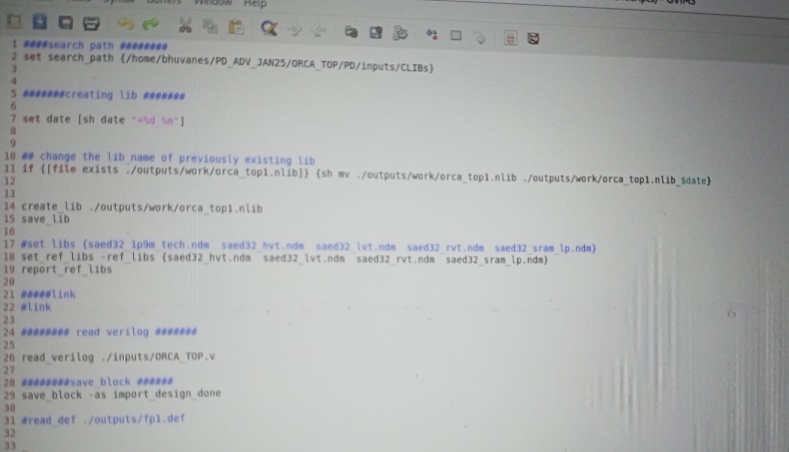
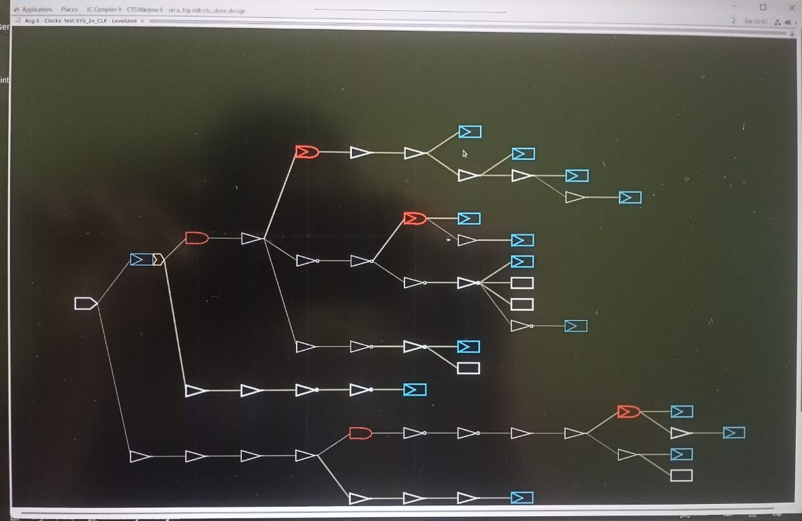
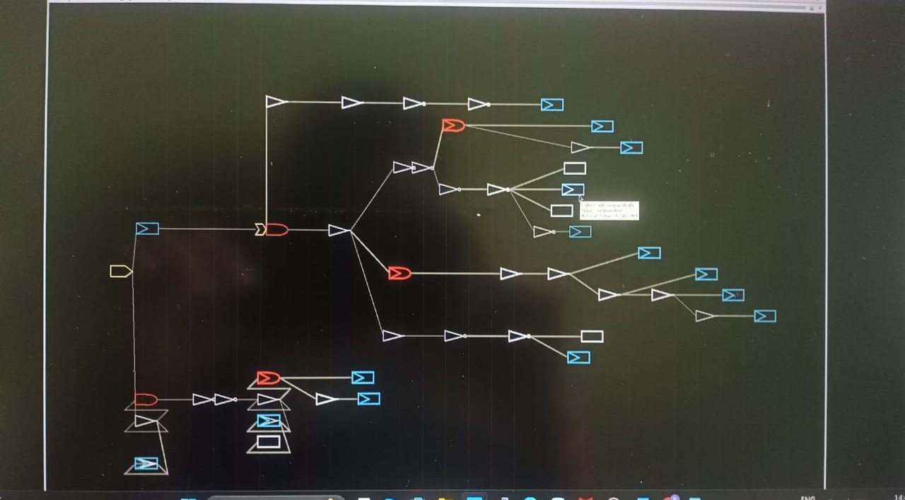
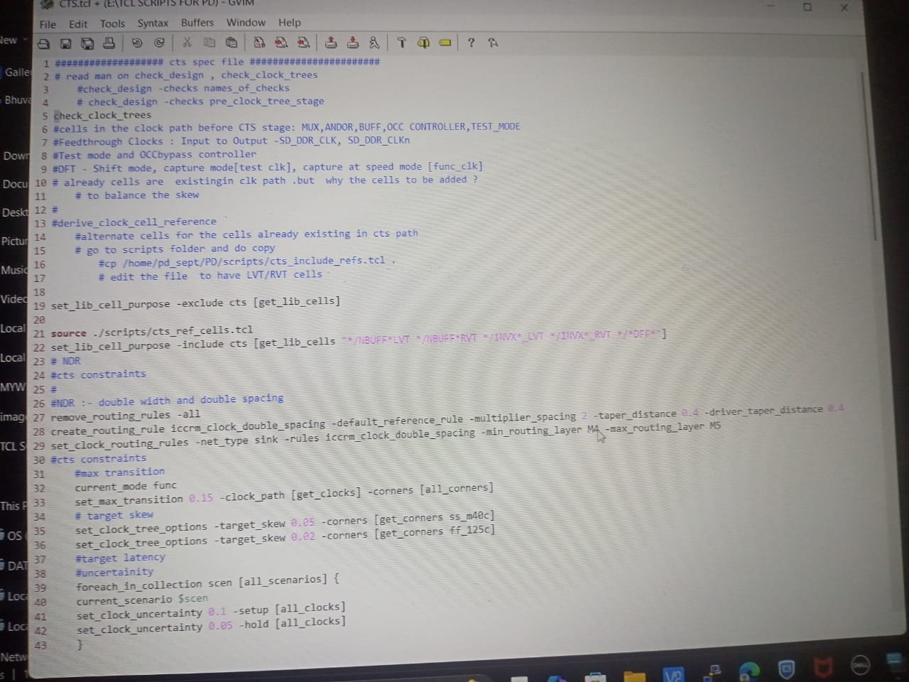
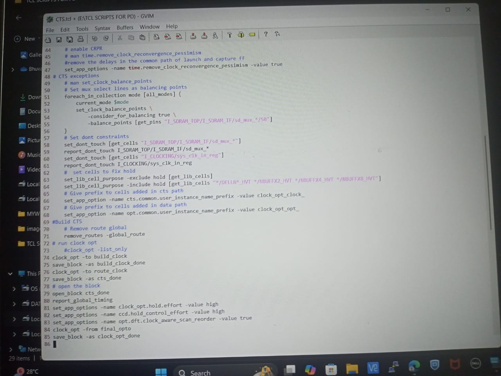
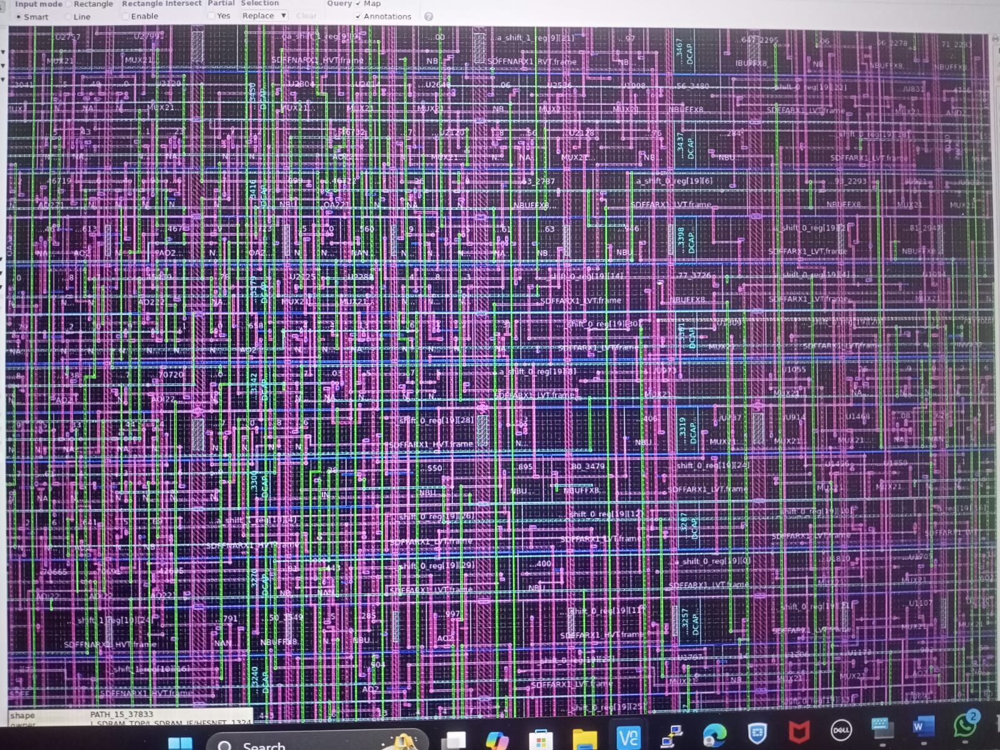
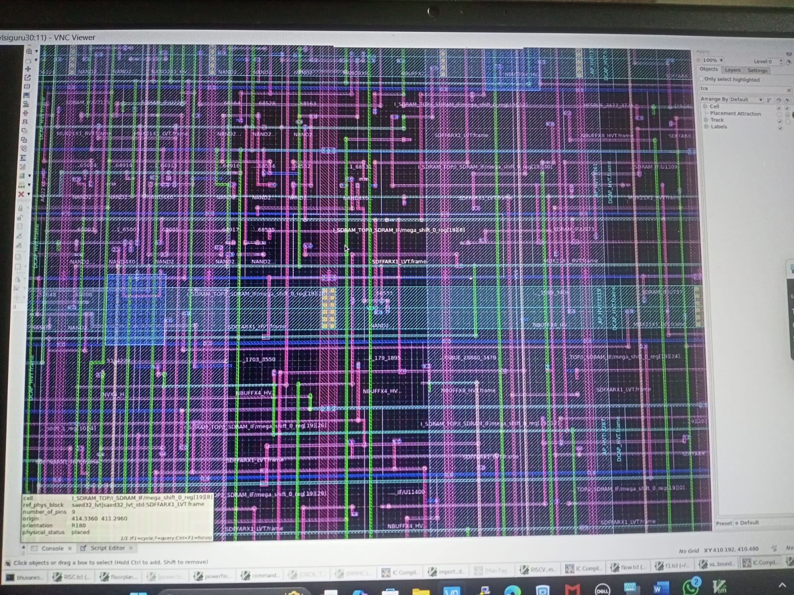
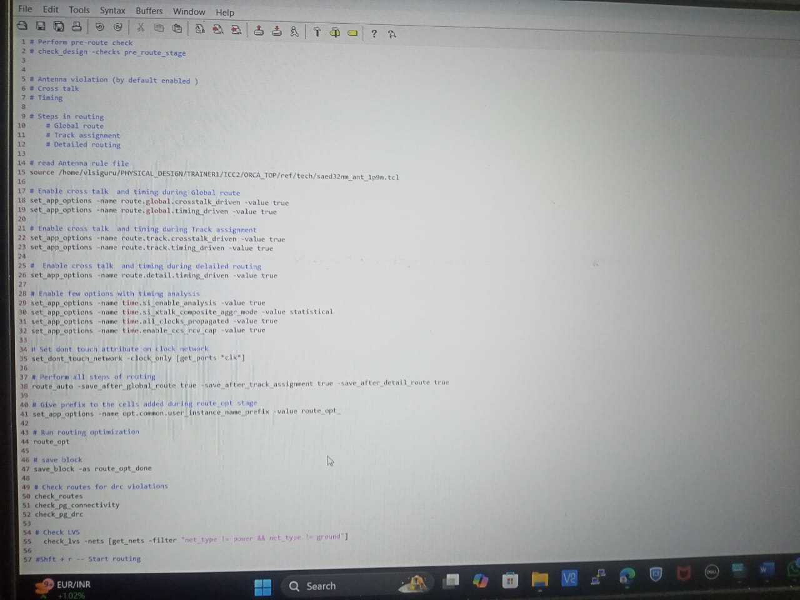

Block-Level Physical Design Implementation of ORCATOP Design using 28nm TSMC
Figure 1: ORCATOP Physical Design Overview
Project Description:
Designed and implemented the ORCATOP block-level physical design using 28nm technology, achieving timing closure with zero DRC/LVS violations, and delivering a sign-off ready netlist and GDS.
Keywords Used:
Key Steps in the Project:
- step-1: Importing Design: During this phase, we are providing input files such as.ndm (lib+.lef+.tf). And create the design environment by defining libraries and block names.
 Figure 2: Importing Design into Synopsys ICC2
- step-2:Floorplanning: During this phase, we are establishing the die area, core area. Performing pin placement, macro placement with proper alignment and spacing. Create voltage area for multi-voltage domains. And the placement of physical-only cells (tap cells, boundary cells).

Figure 3: Die and core area

Figure 4: Macro placement and voltage area creation

Figure 5: Placing Physical only cells
- step-3:Sanity checks: In this step, we are conducting a series of sanity checks including pin placement, macro-placement, voltage area construction, and physical-only cells.
- step-4:Power Planning: In this stage, we are creating power grid network is created to distribute the power uniformly to each part. we are creating the PG pattern, PG strategies, VIA rules to achieve good IR drop performance and optimized power consumption.

Figure 6: Power grid structure
- step-5:Mega Sanity checks: In this step, we are doing mega sanity check for both floorplanning and powerplanning which is called as pre_placement_stage sanity check.
- step-6:Placement: In this stage, we are pulling the std cells into defined core region. Optimized placement will be done based on congestion-driven and timing-driven strategies.

Figure 7: Standard cell placement

Figure 8: script for placement

Figure 9: Script for placement
- step-7:Mega Sanity checks: In this step, we are doing mega sanity check for entire placement stage which is called as pre_clock_tree_stage sanity check.
- step-8:CTS: In this stage, we are building the clock-trees to meet target skew, target insertion delay, target max_trans, target max_cap constraints.

Figure 10: Clock Tree Synthesis (CTS)

Figure 11: CTS

Figure 12: script for CTS

Figure 13: script for CTS
- step-9:Mega Sanity checks: In this step, we are doing mega sanity check for entire CTS stage which is called as pre_route_stage sanity check.
- step-10:Routing: In this stage, we are building real connections between std cells, macros and I/O pins. Ensure DRC clean routing with optimized congestion and minimal RC delay.

Figure 14: Routing

Figure 15: Routing

Figure 16: script for routing
- step-11:Sign-off: In this stage, we are performing all checks like DRC, timing violations, LVS. Ensure design is timing-closed, clean DRC/LVS and ready for tape-out.
Challenges Faced in the project:
• Faced challenges in congestion control,CTS skew, multi-corner timing closure, and sign-off DRC/LVS, fixing max transition, capacitance, fanout violations,Placing macros and standard cells to minimize congestion and wirelength,Designing a robust power grid (straps/meshes) while balancing IR-drop.
Fixes for above challenges:
☆Fixes for Setup violations:
Path Grouping,Bound Creation, Magnet Placement, Vt swapping(HVT to LVT in data path),Upsizing the combo cells,Removing delay buffers in combo path.
☆Fixes for Hold violations:
Vt swapping(LVT to HVT in data path), Adding delay buffers in data path, removing delay buffers in clock path, Downsizing the combo cells.
☆Fixes for congestion:
Bound creation, cell padding(for cell density congestion), Applying Blockages(for pin density congestion), Change the floorplan
☆Fixes for Crosstalk:
Double spacing, Shielding, Metal Hopping, Break the net by adding another metal layer.
☆Fixes for Antenna:
Metal Hopping, Adding antenna diode.
☆Fixes for DRV violations(max_trans, max_cap):
Upsizing the driver cell, Vt swapping, Inserting buffers
☆Fixes for Electromigration:
Apply NDR rules, Metal jumping, increase the width of metal layer.
Conclusion
The project successfully completed the ORCATOP block-level physical design at 28nm TSMC node. All timing and design rule targets were met, achieving a signoff-ready layout suitable for tape-out.